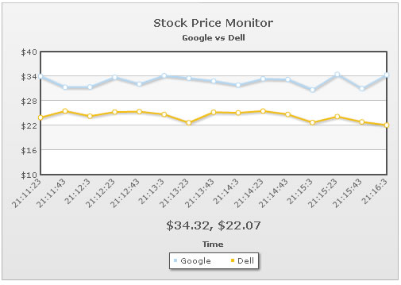

Data-streaming charts > Pushing Multiple Updates |
In our previous examples we saw how to pass single update from the data provider page for each dataset on the chart. However, in each update, you can pass any number of updates for each dataset. To do so, you just need to output the values in following format: &label=11:45,11:46,11:47&value=33,32,34|22,24,25 In the above data, we're providing three updates to both dataset present on the chart. Also, we're providing three new labels for the x-axis. When providing multiple values to update, the values within each dataset need to be separated by comma. And like before, each dataset should be separated by | (pipe) character. |
| Creating the data provider page to output multiple values |
| We create StockPriceGoogDellMultiple.asp with the following code to output 3 values each for both the dataset. |
<%@ Language=VBScript %> 'For the sake of demo, we'll just be generating random values and returning them 'Set randomize timers on Dim lowerLimitGoog, upperLimitGoog lowerLimitGoog = 30 'Generate random values - and round them to 2 decimal places dellPrice1 = Int(Rnd()*100*(upperLimitDell-lowerLimitDell))/100+lowerLimitDell 'Get the current date 'Get 3 labels for the data - time in format hh:mn:ss 'Now write it to output stream |
This page outputs the data in following format: &label=20:59:24,20:59:44,21:0:4&value=34.23,30.46,34.74|22.15,23.91,25.92 As you can see, we're adding three labels and three values to each dataset. When you run the chart, you'll see 3 values being added to each dataset in each update, as shown below: |
|  |
| For each data in the stream, you can also push tool text, color and vLine the same way (separated by comma). |